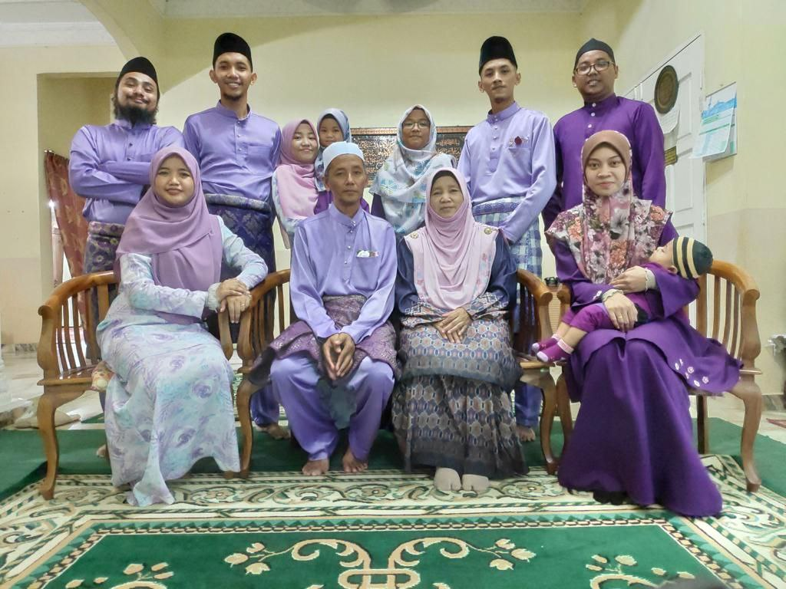
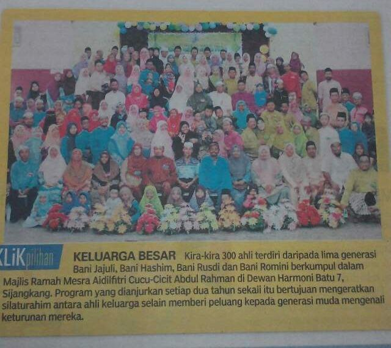

|  |
Family! My family is the people who have always been the foundation of my life, the main source of strength, inspiration, and guidance that has shaped me into who I am today. I grew up in a humble and loving family that strongly emphasized the values of respect, responsibility, and love. These values were not only taught, but lived every day, and they continue to guide me in my personal and academic journey.
My father, a retired private sector employee (Proton), was once known for his strict discipline. Over time, he has become a caring figure who always reminds us of the importance of perseverance and integrity. My mother, on the other hand, is a retired primary school teacher (SK Sijangkang) who dedicated many years of service to the nation. Her patience, wisdom, and caring spirit have left a lasting impact not only on her students but also on us as her children. Together, they instilled in us the importance of education, hard work, and kindness.
I am blessed with six siblings, and being the youngest has given me a unique perspective. Growing up, I was surrounded by the guidance, support, and encouragement of those around me. Each of them played a role in shaping my character, teaching me resilience, and showing me the meaning of unconditional love. As we entered adulthood, our bond as siblings grew stronger, and we continued to support each other through every stage of life.
When I was a child, family time was always precious. We would often spend our days together through simple daily routines, celebrating holidays, gardening, raising livestock, and the occasional vacation. These moments created memories that I carry with me to this day. Whether it was sharing laughter at the dinner table, helping each other with schoolwork, or exploring new places during the holidays, each experience strengthened our bond and reminded us of the importance of unity.
To me, family is not just about blood ties, but about values and lessons passed down from one generation to the next. My family has taught me that true success is not just measured by achievements, but also by the ability to remain humble, compassionate, and responsible. They are my safe place, my biggest motivation, and the reason I strive to be a better person every day.
|  |
I come from a large family that I am very proud of, my father’s side of the family which consists of five generations of descendants of Bani Jajuli, Bani Hashim, Bani Rusdi and Bani Romini. This family group not only symbolizes a vast heritage, but also the strength of the bond that continues to be maintained from generation to generation.
One of the most meaningful moments was when we gathered for the Abdul Rahman Grandchildren-Great-Grandchildren Aidilfitri Friendly Gathering held at Dewan Harmoni Batu 7, Sijangkang. The gathering brought together about 300 family members, from children to senior citizens. In an atmosphere full of love and celebration. It was not just a gathering, but an ongoing effort to unite hearts and recognize our ancestral roots.
This program is organized every two years, and is an important space for the younger generation to recognize their origins, understand the family lineage, and appreciate the family values that have been inherited. It also symbolizes the strength of a small community formed from the bonds of blood and love that never fade.
As the youngest child in my own family, I see events like this as an opportunity to learn, appreciate, and continue the family legacy. It reminds me that behind every name and face, there are stories, struggles, and values that shape who we are today.